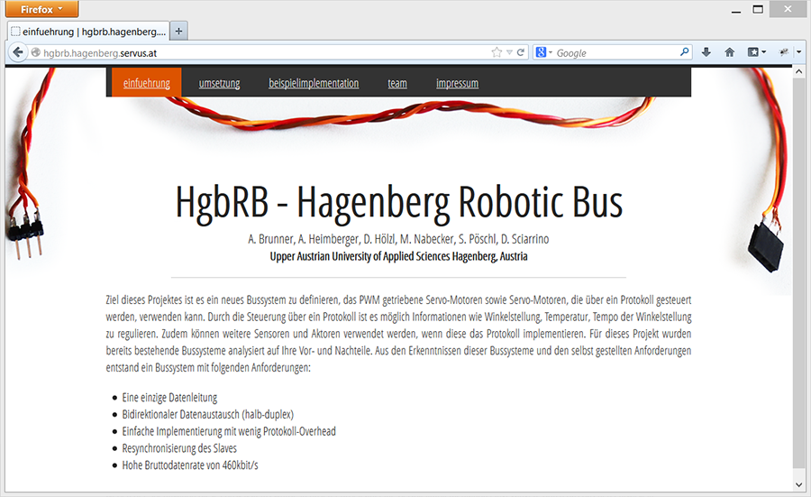

Student Project: HgbRB

I took part in a project to create a bus-system, called “Hagenberg Robotic Bus”. It’s for sure questionable why you should create a new bus-system, but our research showed that their are still improvements. The bus-system was created to interact with normal pwm-servos but also with microcontrollers. A really nice idea of the bus-system was to lower the protocol overhead, via a synchronization pattern. This pattern is build into the cmd-byte. You can get more information on the project website.
Responsible for:
- Design of the website with Drupal
- Research existing Bus-Systems : Single-Wire-Can, LIN<
- Part in the VHDL-Master implementation
- C# Interface to test the bus-system